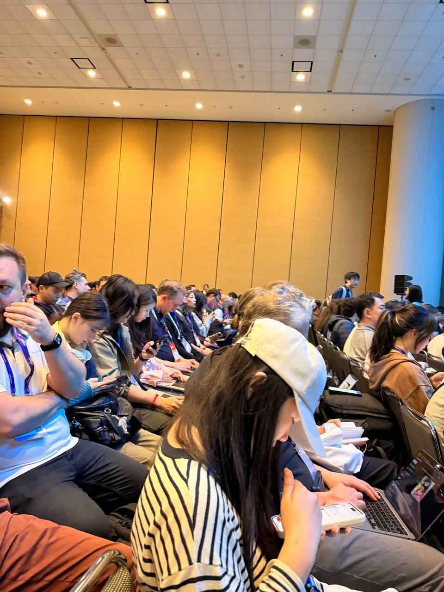

Session Notes
🎮 How AI is Reshaping Game Creation
"The traditional seven stages of game development — creative, prototype, green light, pre-production, production, live operations — have been collapsed down into three phases."
"Non-engineers are coming to me saying 'I'm able to do this!' They sat down one afternoon and figured out a tool that would have taken engineering a month. They did it in an hour. That's a whole different type of personal power."
"Through conversations with game developers globally — many different roles, many different regions — I've seen a growing number of studios actively incorporating AI into their production workflow."
"Almost anybody now can take an engine like Unity and 3D tools to build a playable vertical slice."
This "compression effect" mirrors quantitative finance — AI collapses the research-to-production cycle just as it collapses game dev stages. Non-engineers building tools in hours instead of months is the same pattern we see with analysts now prototyping trading strategies without dedicated quant devs.
🎨 Adobe Substance Days
Featured showcase of Clair Obscur: Expedition 33 — a visually stunning action RPG built with Adobe Substance for next-gen material and texture workflows.
"When I was young, I used to see people..." — "Take everything."
Cinema-quality character models, surreal fantasy environments with volumetric lighting, particle-heavy combat VFX, and a polished RPG battle UI with QTE mechanics. The Substance pipeline enables these AAA-quality materials in a mid-size studio production.
🤖 AI in Game Development — Deep Dive Panel
🎙️ Full recording: 1h 36m — AI transcribed via Gemini
AI is a foundational shift comparable to 2D→3D and single-player→live-service. It's not just a new tool — it's pervasive, transforming developer productivity, player experience, and who can create games. The focus is on augmentation over replacement, with strong emphasis on maintaining human oversight.
"This is a category of its own because of its pervasiveness... it's transforming everything from developer productivity to player experience to actually who's going to build your game."
"The biggest 'aha moment' I've had is the definition of who can be a creator. AI is going to expand the definition of who is able to be a creator."
"The introduction of AI technology into game production could have a similarly significant impact [as the 2D to 3D transition]. That shift required much deeper mathematical knowledge and the developer pool immediately became very wide and diversified."
"The failure wasn't AI's capability, it was how we were using it. An expert cinematographer doesn't want to draw proxy lines — they want to describe their vision."
"At Unity, we believe humans need to be in the loop at every stage of the pipeline. When a human was removed entirely, intent would drift — you just don't know what it's going to do."
Unity AI Gateway: A new MLCP Server providing standardized communication between Unity and third-party AI agents — a single point of entry to the entire AI ecosystem.
AI Literacy Gap: EA emphasizes "getting everybody to lower orbit first" before expecting moonshots. The industry's AI literacy is deeply uneven.
New Genres: Unity believes new game genres won't come from publishers — they'll emerge from newly empowered creators using AI tools.
🎨 Smart Art Pipelines for Small Teams
🎙️ Full recording: 1h 57m — AI transcribed via Gemini
A small team achieves AAA-quality visuals through smart asset reuse, procedural texturing, and unified art direction. Baroque architecture meets Caravaggio's chiaroscuro — hyper-contrasted black and gold aesthetics powered by intelligent Substance Painter workflows.
"The main challenge for us, as a small team, it's just to be smart. We couldn't just create all these assets — so we decided to do smart stuff."
"Using smart workflows to create a game that we wanted without compromising the quality and without limiting the scope."
Substance Painter: Procedural smart masks, custom filters, curvature/AO-driven materials for rapid iteration.
Modular Reuse: Enemies built from shared parts, environments from reusable building blocks — all re-textured to maintain visual variety.
Tool Chain: ZBrush (sculpt) → Maya (model) → Substance Painter (texture) → Unreal Engine (integrate) → Marmoset (present).
"Painting in 3D": Artists apply effects directly in 3D space using procedural tools, bypassing traditional 2D painting for faster iteration.
🏟️ GDC Opening Night at Oracle Park
The GDC week kicks off under the stadium lights at Oracle Park. Thousands of developers, lanyards swinging, filling the concourse — food stalls, digital displays, and that unmistakable energy of the industry gathering in one place.
📡 Day 2 coming up
Developer's Concert with Austin Wintory, more sessions, and live updates. Check back tomorrow.
Emerging Themes
The Compression Effect
AI doesn't speed up steps — it eliminates entire phases. Unity's 7→3 stage collapse is the headline, but the pattern is everywhere.
Personal Power
The most charged moment: non-engineers building production tools in hours. This is the real disruption — not faster code, but new creators.
Global Adoption
Sony confirms: studios worldwide are actively integrating AI into production. The platform holders are enabling, not resisting.
Human in the Loop
Unity and EA both warn: removing humans entirely causes "intent drift." AI augments creativity — it doesn't replace it. Design for creative intent, not technical workflow.
Smart Reuse
Small teams punch above their weight through procedural texturing, modular assets, and unified art direction. Be smart, not big.
AI Literacy Gap
EA's mandate: get everyone to "lower orbit" first. The industry's AI literacy is deeply uneven — foundational skills before moonshots.
From the Floor



Update Log
2026-03-09
Day 1, 10:55 PM — Added 2 full session recordings (3.5h total): "AI in Game Development — Deep Dive Panel" (Unity, EA, Sony) + "Smart Art Pipelines for Small Teams" (Substance/Unreal). 6 new themes. AI transcribed via Gemini 2.5 Flash.
Day 1, 4:00 PM — Added Adobe Substance Days: Clair Obscur: Expedition 33 trailer video (selfie auto-trimmed).
Day 1, 10:30 AM — Initial publish. "How AI is Reshaping Game Creation" panel with Google Cloud, EA, Sony, and Unity. 10 photos, 4 video clips transcribed via Gemini 3.1 Pro.